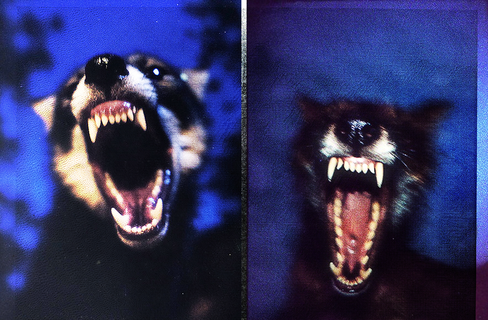
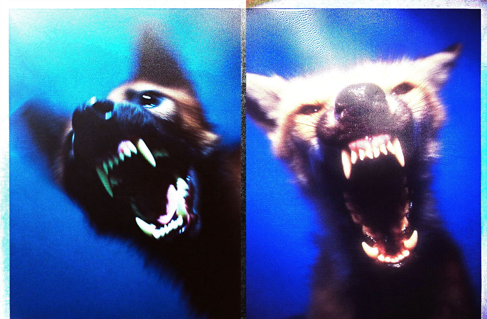
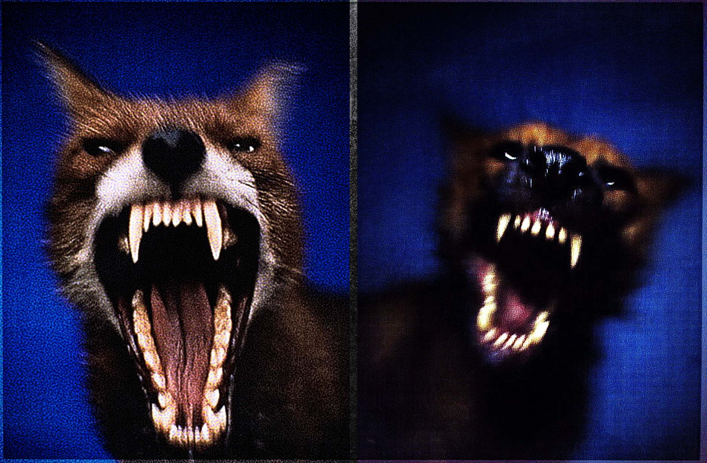
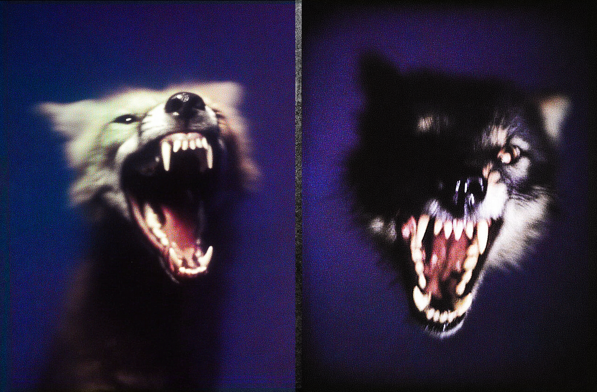
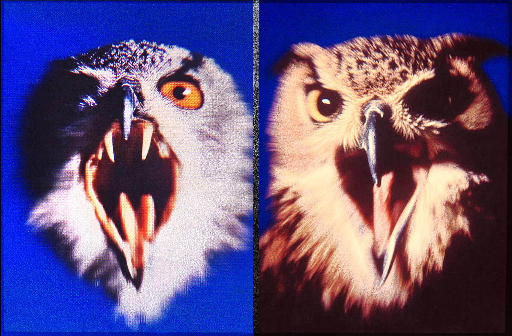
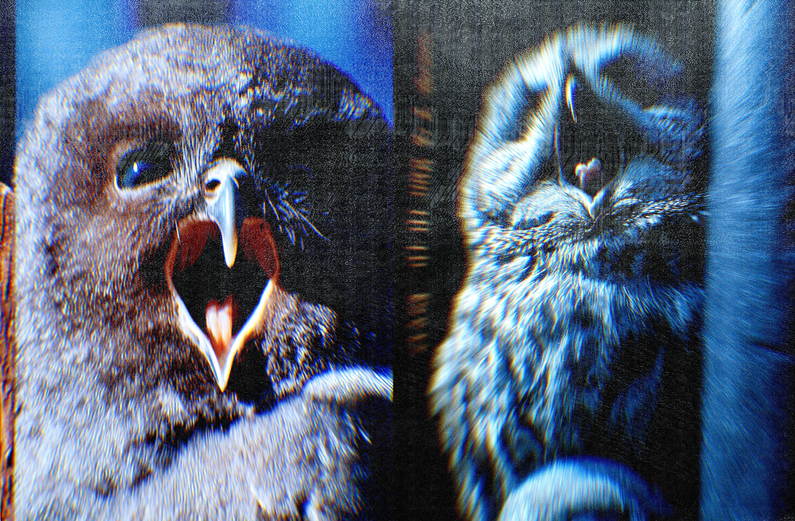
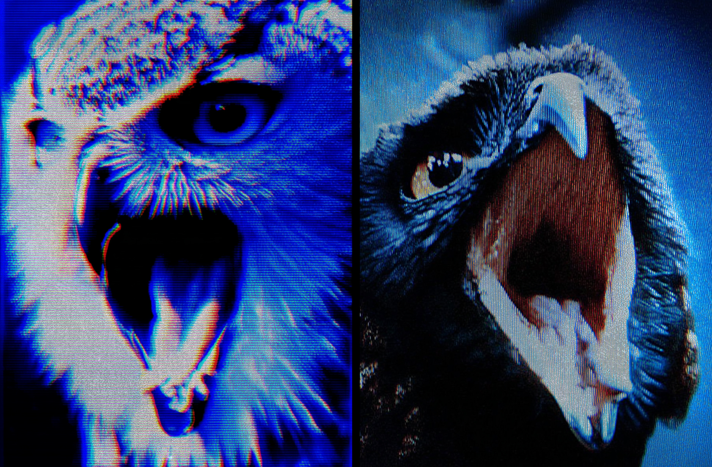

Steppe
A series of animal portraits suspended at the exact moment instinct becomes visible.
Dogs and owls appear caught in states of warning, fury and confrontation — shouting, bristling and holding their ground. Each image focuses on the brief instant when posture and expression turn into a clear signal of aggression.
Created with Midjourney, the series combines photographic grain, rough photocopied textures and the worn visual language of printed magazines to give each scene a raw, grunge intensity.
2024






